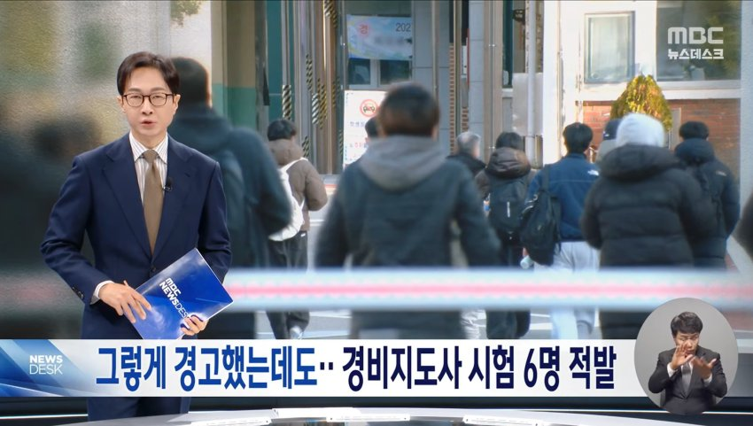
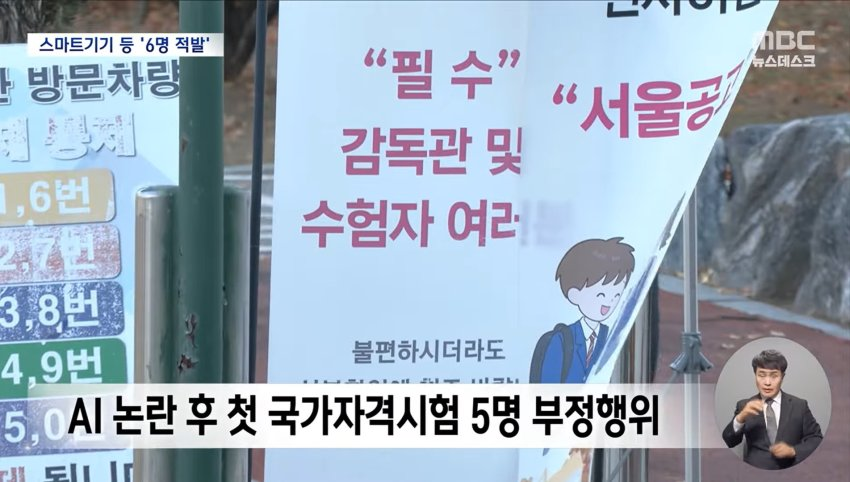
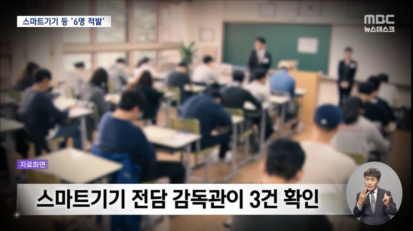
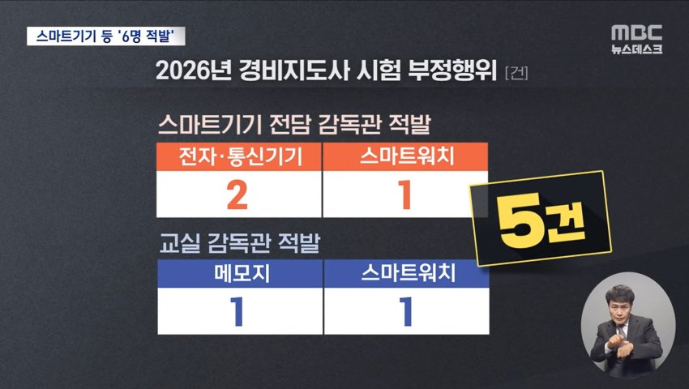
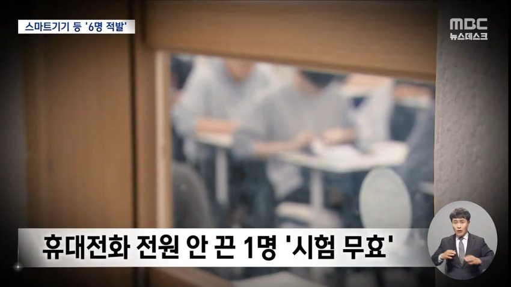
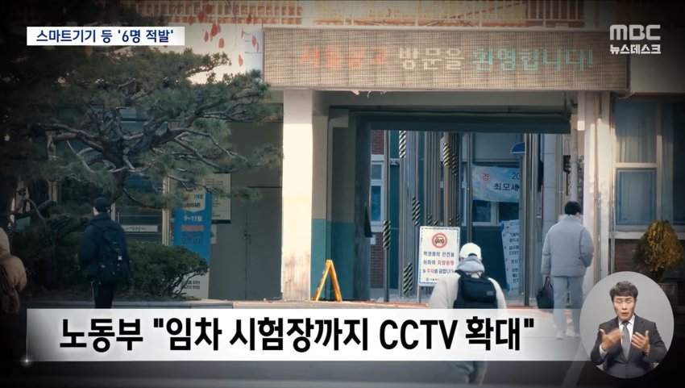

여러분 안녕하십니까?
인공지능 부정행위 사태 여파가 계속되고 있습니다.
사태 확산 이후 처음으로 오늘 국가자격시험이
대폭 강화된 시험 감독 속에 치러졌는데요.
당국의 거듭된 경고에도 불구하고 다섯 명이 부정행위로 적발됐고
한 명은 시험이 무효 처리됐습니다.
특히 일부는 스마트기기 전담 감독관이 전자 기기 신호를 감지해
적발해 냈는데요. 먼저 김민욱 기자가 보도합니다.

AI 부정행위 논란 이후 처음 치러진 국가자격시험인
경비지도사 시험.
오늘 전국 33개 시험장에서 1차 4,400여명, 2차 7,000여명이
응시했습니다.
한국산업인력공단은 시험 과정에서 다섯 명이 부정행위로
적발됐다고 밝혔습니다.

이 가운데 세 명은 지난 10월부터 국가자격시험에 투입되고 있는
스마트기기 전담 감독관이 잡아냈습니다.

복도를 돌며 전자기기 신호를 감지하는 전담 감독관은
전원이 켜진 태블릿, PC 등 전자통신기기를 가진 응시생 두 명과
스마트워치를 찬 한 명을 적발했습니다.
고사실 안에서도 메모지를 쓴 응시생과 스마트워치를 찬 응시생이
감독관에게 적발됐습니다.

이들 다섯 명은 부정행위자로 분류돼 응시 제한 등의 처분을
받을 수 있습니다.
휴대전화는 전원을 확인해 일괄 수거한 뒤 무작위로 전화를 걸어
한 번 더 확인했는데 이 과정에서 응시생 한 명의 휴대전화가
울렸습니다.
이 응시생은 부정 행위에는 해당하지 않지만
시험은 무효 처리됐습니다.
정부가 여러 대책을 내놓고 있지만 성실하게 시험을 준비해 온
응시생들 사이에서는 걱정이 남아 있습니다.

노동부는 앞으로 학교 등을 빌려쓰는 임차 시험장까지
CCTV를 확대하고 합격자를 확정하기 전에 점수 패턴을 분석해
답안을 다시 검수하는 등 부정행위 대책을 더욱 강화 할 방침입니다.
댓글
수집 당시 댓글 92개
楚覇王 項羽 · 11.22 22:15:24
· ㅇㅇ · 11.22 22:21:46
· 楚覇王 項羽 · 11.22 22:21:56
봇치쟝 · 11.22 22:16:26
나만로치안줘 · 11.22 22:16:37
· ㅇㅇ · 11.22 22:23:58
· ㅇㅇ · 11.23 10:29:36
ㅇㅇ · 11.22 22:17:08
ㅇㅇ · 11.22 22:17:19
· ㅇㅇ · 11.22 22:17:46
· ㅇㅇ · 11.22 22:18:05
· ㆁㆁ · 11.22 23:50:43
ㅇㅇ · 11.22 22:17:23
· ㅇㅇ · 11.22 22:22:33
· ㅇㅇ · 11.23 15:58:11
말은적게훈련은많이 · 11.22 22:17:40
2456778 · 11.22 22:19:07
2456778 · 11.22 22:19:19
· 이모티콘수집 · 11.22 22:23:24
ㅇㅇ · 11.22 22:19:22
· ㅇㅇ · 11.22 22:27:44
· ㅇㅇ · 11.22 22:57:08
ㅇㅇ · 11.22 22:19:26
· ㅇㅇ · 11.22 23:58:11
ㅇㅇ · 11.22 22:19:55
Ai부정행위기업이다 불매운동드게제~~
ㅇㅇ · 11.22 22:19:57
· ㅇㅇ · 11.22 22:20:12
· ㅇㅇ · 11.22 22:20:16
· ㅇㅇ · 11.22 22:20:23
ㅇㅇ · 11.22 22:21:26
ㅇㅇ · 11.22 22:22:04
ㅇㅇ · 11.22 22:22:36
ㅇㅇ · 11.22 22:22:42
이모티콘수집 · 11.22 22:23:40
· 2456778 · 11.22 22:25:19
ㅇㅇ · 11.22 22:24:11
ㅇㅇ · 11.22 22:24:41
ㅇㅇ · 11.22 22:25:42
ㅇㅇ · 11.22 22:25:56
ㅇㅇ · 11.22 22:26:09
ㅇㅇ · 11.22 22:29:27
ㅇㅇ · 11.22 22:30:39
ㅇㅇ · 11.22 22:31:05
· ㅇㅇ · 11.22 22:31:22
· ㅇㅇ · 11.22 22:31:28
ㅇㅇ · 11.22 22:32:02
ㅇㅇ · 11.22 22:32:07
ㅇㅇ · 11.22 22:33:52
· ㅇㅇ · 11.22 22:37:51
ㅇㅇ · 11.22 22:34:02
ㅇㅇ · 11.22 22:36:19
ㅇㅅㅇ · 11.22 22:37:06
· ㅇㅇ · 11.23 00:42:12
ㅇㅇ · 11.22 22:37:35
· ㅇㅇ · 11.22 22:39:44
ㅇㅇ · 11.22 22:41:08
ㅇㅇ · 11.22 22:41:12
ㅇㅇ · 11.22 22:43:34
ㅇㅇ · 11.22 22:44:37
· ㅇㅇ · 11.23 03:39:39
좌좡면한그륵뭐그런쇼망 · 11.22 22:49:02
ㅇㅇ · 11.22 22:51:25
ㅇㅇ · 11.22 22:57:43
ㅇㅇ · 11.22 23:00:05
ㅇㅇ · 11.22 23:03:12
· ㅇㅇ · 11.23 00:40:32
· ㅇㅇ · 11.23 00:47:14
· ㅇㅇ · 11.23 09:05:03
ㅇㅇ · 11.22 23:06:35
DOOM · 11.22 23:13:15
8845HS · 11.22 23:32:02
ㅇㅇ · 11.22 23:34:14
ㅇㅇ · 11.22 23:46:21
00 · 11.22 23:57:08
ㄴ뇨뇸전 · 11.23 00:42:02
ㅇㅇ · 11.23 00:43:49
ㅇㅇ · 11.23 02:13:03
ㅇㅇ · 11.23 02:13:07
. · 11.23 03:10:16
ㅋㅋ · 11.23 06:54:59
ㅇㅇ · 11.23 08:06:15
ㅇㅇ · 11.23 08:08:25
순수비난 · 11.23 08:27:15
ㅇㅇ · 11.23 12:58:14
ㅇㅇ · 11.23 13:24:05
ㅇㅇ · 11.23 13:50:12
ㅇㅇ · 11.23 14:20:35
롤갤러 · 11.23 14:21:00
ㅇㅇ · 11.23 14:34:07
ㄹㅇㅎ · 11.23 16:18:30
ㅇㅇ · 11.23 16:32:27
ㅇㅇ · 11.23 17:47:48